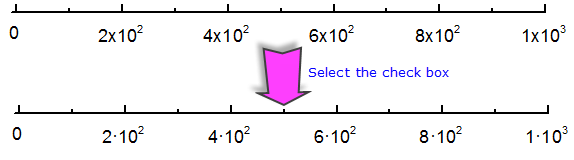

Einstellungen auf dieser Registerkarte legen die Optionen verschiedener Diagrammachsenformate fest.
| Numerische Skalierungen |
Das Auswahlfeld Numerische Skalierung legt die maximale Anzahl an großen Hilfsstrichen fest, die in einem Diagrammfenster angezeigt werden können, wenn Numerisch in der Auswahlliste Typ auf der Registerkarte Hilfsstrichsbeschriftung des Dialogs Achse ausgewählt ist. Wenn die Option # Große Hilfsstriche auf der Registerkarte Skalierung des Dialogs Achse ausgewählt ist und der Wert im verbundenen Textfeld den Wert des Kombinationsfeldes Numerische Skalierung überschreitet, dann zeigt Origin ein Maximum von sechs großen Hilfsstrichen im Diagrammfenster an. |
|---|---|
| Zeitskalierung Text/Datum |
Das Kombinationsfeld Zeitskalierung Text/Datum legt die maximale Anzahl an großen Hilfsstrichen fest, die im Diagrammfenster angezeigt werden, wenn Text aus Datensatz, Zeit, Datum, Monat oder Wochentag in der Auswahlliste Typ auf der Registerkarte Hilfsstrichsbeschriftung des Dialogs Achse ausgewählt ist. Der Standardwert ist 400. Wenn die Anzahl von großen Hilfsstrichen den Wert des Kombinationsfelds Zeitskalierung Text/Datum überschreitet, zeigt Origin ein Maximum von sechs großen Hilfsstrichen im Diagrammfenster an. (Wird beeinträchtigt, wenn der Typ der Großen Hilfsstriche auf der Registerkarte Skalierung des Dialogs Achsen auf die Option Nach Inkrement oder Nach Anzahl gesetzt ist.) Hinweis: Wenn der Typ der Großen Hilfsstriche auf Nach Datensatz gesetzt ist, wird die maximale Anzahl der großen Hilfsstriche von den Befehlen @ATDM und @ATDS bestimmt und nicht von diesem Bedienelement. |
| Innere Hilfsstriche |
Geben Sie den Standardabstand eines "inneren Hilfsstrichs" von der Hilfsstrichsbeschriftung in Prozent der Hilfsstrichslänge an oder wählen Sie diesen aus. |
|---|---|
| Äußere Hilfsstriche |
Geben Sie den Standardabstand eines "äußeren Hilfsstrichs" von der Hilfsstrichsbeschriftung in Prozent der Hilfsstrichslänge an oder wählen Sie diesen aus. |
| Achsentitel |
Geben Sie den Standardabstand des Achsentitels von der Hilfsstrichsbeschriftung in Prozent der Hilfsstrichslänge an oder wählen Sie diesen aus. |
Die Beschriftung des Nullpunkts wird immer auf der Achsenskalierung als '0' angezeigt, womit andere Formatoptionen (z. B. Setze Dezimalstellen = 2) überschrieben werden.
Bitte beachten Sie, dass eine Systemvariable @TLC zum Steuern dieser Option verwendet werden kann.
Die anhängenden Nullen werden immer von den Beschriftungen der Achsenhilfsstriche entfernt, womit andere Formatoptionen (z. B. Setze Dezimalstellen = 2) überschrieben werden.
Bitte beachten Sie, dass eine Systemvariable @TLC zum Steuern dieser Option verwendet werden kann.
Aktivieren Sie dieses Kontrollkästchen, um 1 und 10 als 10^n anzuzeigen, wenn die Anzeige der Hilfsstrichsbeschriftungen auf Wissenschaftlich: 10^3 festgelegt wurde.
Verwenden Sie diese Auswahlliste, um festzulegen, wie das Wissenschaftliche Format (10^3) gezeigt wird, wenn das Anzeigeelement der Hilfsstrichsbeschriftungen folgendermaßen aussieht:1×10^3,1 × 10^3, 1x10^3, 1·10^3.
|
Hinweis: Vor Origin 2021 können Sie nur das Kontrollkästchen 1×10^3 als 1·10^3 im Wissenschaftlichen Format:10^3 anzeigen verwenden, um das Wissenschaftliche Format (10^3) mit 1×10^3 oder 1·10^3 zu zeigen, wie bei:  |
Verwenden Sie diese Auswahlliste, um festzulegen, wie das wissenschaftliche Format angezeigt werden soll (1E3): 1E+03, 1E+3 oder 1E3. Die Standardeinstellung ist 1E+03.
|
Hinweis: Sie können die Systemvariable verwenden, um die Einstellung für diese Auswahlliste zu ändern:
|
Um die Anzeige der Einheiten für Achsentitel zu steuern, (a) wählen Sie eine Option aus dem Ausklappmenü oder (b) geben Sie eine benutzerdefinierte Notationszeichenkette direkt ins Bearbeitungfeld ein. Die benutzerdefinierte Zeichenkette kann literalen Text einschließen.
| Menüoption | Anzeige im Textfeld | Anzeige im Achsentitel, zum Beispiel ... |
|---|---|---|
| <Auto> | <Auto> | hängt von dem Wert der Sprachversion und den Werten der Systemvariablen @LUQ und @LUQO ab (siehe Hinweise). |
| <Keine> | <Keine> | |
| (<U>):(Einheit) | (<U>) | Displacement (mm) |
| [<U>]:[Einheit] | [<U>] | Displacement [mm] |
| {<U>}:{Einheit} | {<U>} | Displacement {mm} |
| /<U>:/Einheit | /<U> | Displacement /mm |
| -<U>:-Unit | -<U> | Displacement -mm |
| in <U>:in Einheit | in <U> | Displacement in mm |
| %(CRLF)<U>: Einheit in 2. Zeile | %(CRLF)<U> | Displacement mm |
|
Hinweise:
|